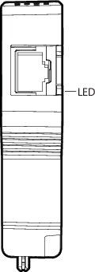

Safety Network Port LEDs
The CSLS carrier house a primary and secondary Safety Network Port
(SNP) for connections to the Local Safety Network. Each port has a port
activity LED.

| LED color and pattern | Description and corrective action |
|---|---|
| Flashing green | The link is established and active Ethernet traffic is being transmitted and received. This is the normal operating condition. |
| Solid green | The link is established, but no Ethernet traffic is occurring. This pattern verifies the wiring and connections and can occur for a short time at power up. If this pattern persists after the CSLS is powered, verify that the Safety Network Port is properly seated in the CSLS and the CSLS is properly seated in the carrier. Also ensure that the SZ controller is powered and connected to the DeltaV Control Network and the Local Safety Network. |
| Off | The Safety Network Port is not physically connected, neither CSLS is present, or both CSLSs are unpowered. Verify that at least one CSLS is installed and powered. Check to see if the connection to the Ethernet switch is correct and that the switch is on. |